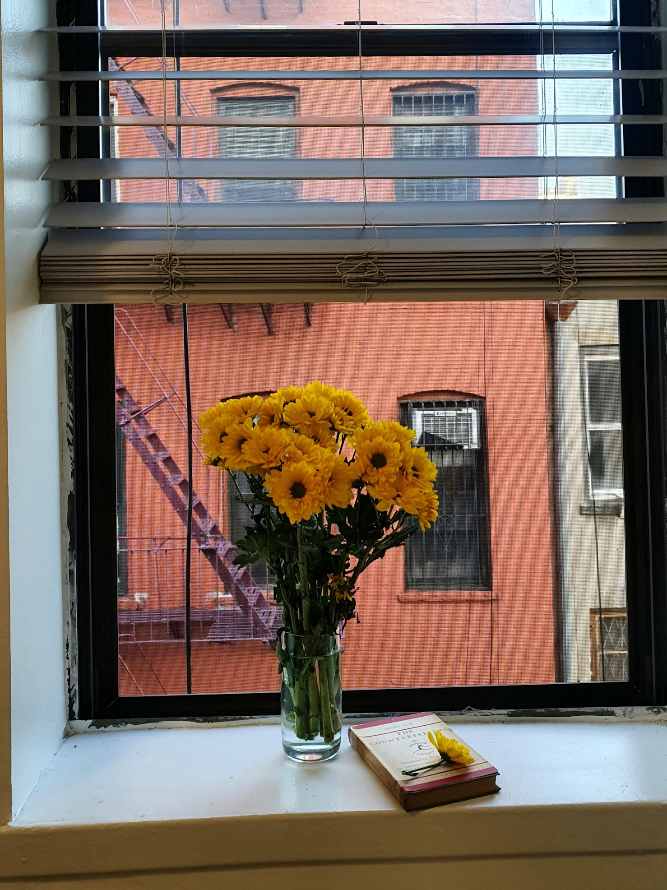
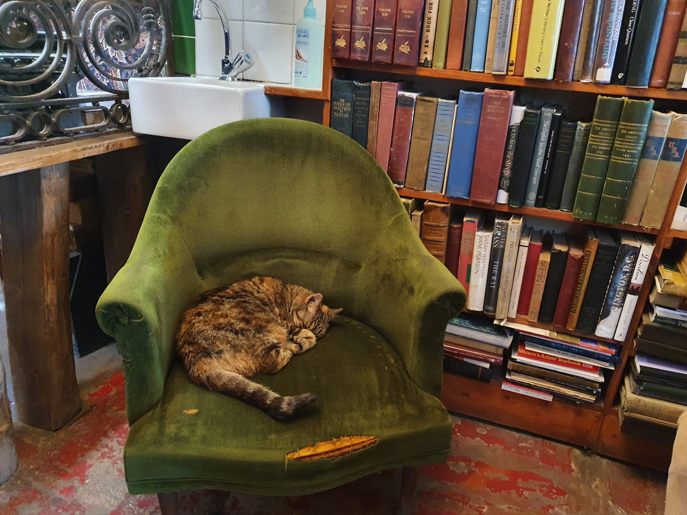

2025 - Present
Postdoctoral Fellow
Teachers College, Columbia University, New York

On this website, I share my research, reading life, and personal notes on books and films.
Take a look at my CV for a fuller view of my academic path, research, and teaching.
Teachers College, Columbia University, New York
CNRS and ENS-PSL, Paris
ENS-PSL and Universite de Paris Cite
Middle East Technical University (METU), Ankara
For as long as I can remember, I've wanted a library of my own.
Because to me, libraries are memories, little life stories on their own.
Maybe that's why, in every city I've lived in, I built small libraries, quiet accumulations of books gathered along the way. But each new beginning also meant leaving something behind. Shelves emptied, books dispersed. Leaving a library behind almost feels like losing memories.
So I started looking for something more lasting. More portable.
This space is the result: a digital archive of books and films, my own small library, reimagined.
Here, I keep track of what I read and watch, along with notes, lines I love, and fragments that stay with me.
In a way, this page is my personal timeline, a record not only of what I remember, but of what I choose to remember.
Maybe something here will stay with you, too.
Welcome.
Imported from my Letterboxd diary with watch date, release year, country, rating, and review notes.
The three most recent books from my personal reading shelf.

I am always happy to connect for research collaborations, interdisciplinary projects, and thoughtful conversations around learning and education.
